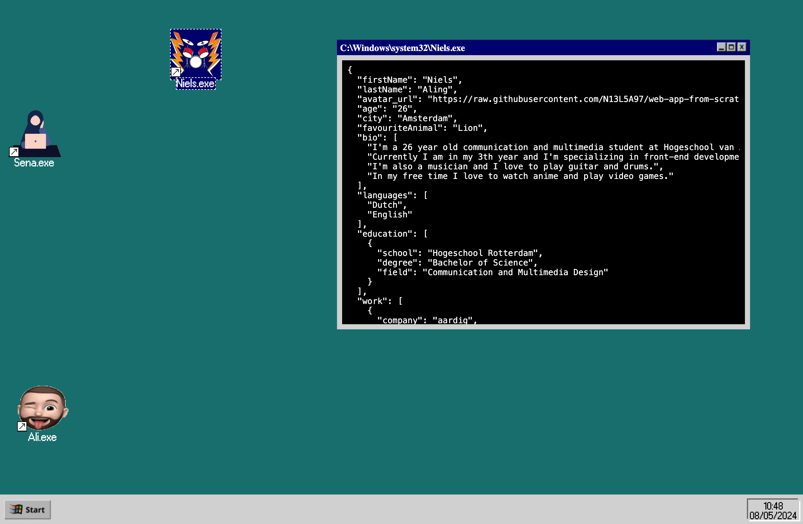
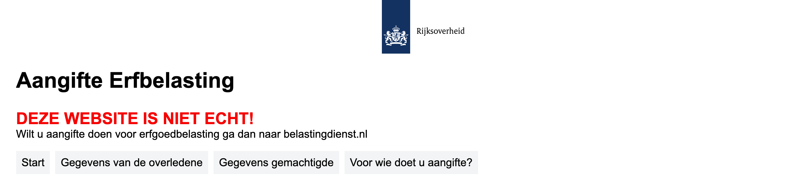
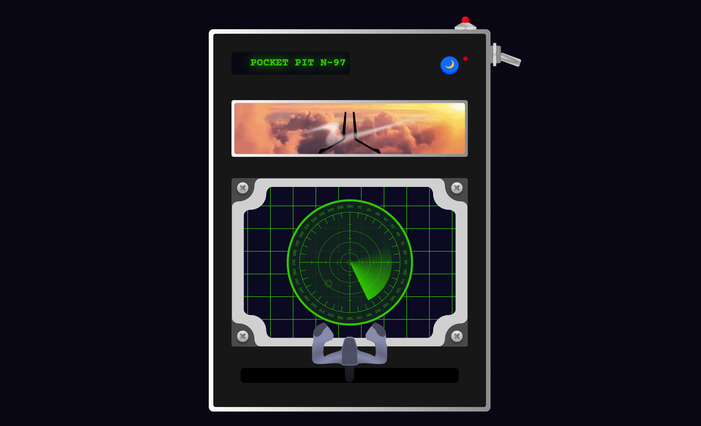
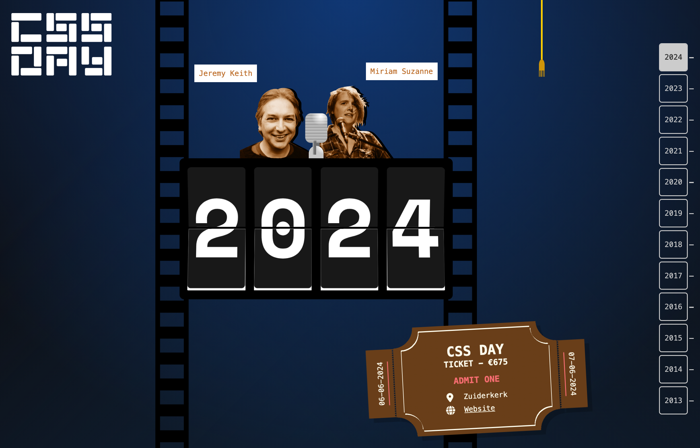
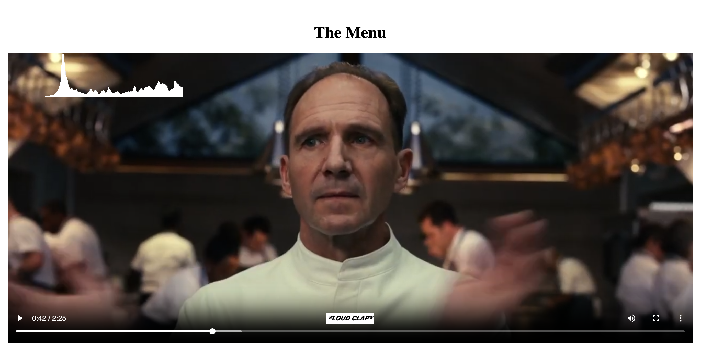

Who am I?
I'm a 26 year old student living in Amsterdam. I am currently in my third year of Communication and Multi-media Design, following the minor web design and development at Hogeschool van Amsterdam (HvA).
What I Want To Learn
At minor web I would love to improve my HTML, CSS and Javascript techniques, make my website more accessible and gain more confidence in my ability to make websites.
Web App from Scratch
The first 2 weeks were divided into 2 projects. The first project was an individual website about yourself. The requirements were to use vanilla HTML, CSS and Javascript, make it responsive, have at least one micro interaction and make use of at least one API. The second project was a group project where we had to fetch everyone's data from our individual page and com eup with a creative way to show each other's data.
My Individual Website
For my website I used the Spotify API to fetch my public playlists and display them on my website. I put my data in a json file and fetched this from my Github repository. For the micro interactions I made some hover effect on the buttons.

Our Group Project
For our group project I came up with the idea to recreate an old Windows Desktop where we all have our own file with out data in it. I designed the buttons and windows and made the layout for the website. I also created the functions to open close and maximize the windows.
Browser Technologies and CSS to the Rescue
Browser Technologies was a subject about creating robust html, building a strong foundation for your website in cases things might go different then you expected.
CSS to the Rescue was all about... CSS of course. We were not allowed to use any Javascript, ID's and classes.
Browser Technologies
The project was about a form for the Dutch Embassy. This form had to work on most devices, browsers, internet speeds and with or without Javascript and CSS. We had to think about solutions for when one of these technologies was not available. I learned a lot about progressive enhancement and how to make a website more accessible.
CSS to the Rescue
My CSS to the Rescue project was about creating a control panel from an airplane. It was based on a cockpit but I wanted to make it pocket sized. I learned a lot from the :has and :not selectors and the usage of style queries. I had a lot of fun with this project and was able to use a lot of the things I learned here in the Browser Technbologies project.
Hackathon
This hackathon was a 4 day event where we had to create a cool website for the CSS Days congress. This was their 10th edition and they wanted us to do something with the data of the previous editions. This included the speakers, the mc's, the location of the events, the dates, the ticket prices and much more. We ended up creating a flip clock that showed each year and displayed the mc's, ticket information and speaker of that year. It was a really fun week and I learned a lot about the intersection observer, the fetch API and got a lot better at CSS.
API and Human Centered Design
API was a subject where we had to learn how to fetch data. We had to set-up a server with node and use a templating engine to render the data on the page.
Human Centered Design was a project for people with a disability. We had to interview and test with the target audience and make a product that was accessible for them.
API
For the API project I choose to work with the Movie Database. Since I'm a Spider-Man fan I thought it would be fun to use that in my project. I really got the hang of fetching data and working ith node.js and express. I also learned a bit about GSAP.

Human Centered Design
For this project my "target audience" was Marie. Marie is Deaf and told us a lot about her experience with movies. She missed the depth of the closed caption. She missed the tone, volume and way people speak. Also the music was not really described the way she wanted. So for her I tried to create a more lively closed caption with other small effect to improve her experience while watching movies.
Reflection
I learned a lot in the last couple of weeks. I can really say I achieved my first learning goal. I got a lot better and confident at html, css and Javascript. I tried new things and found out I really need to ask for help when I can't figure it out by myself. I also learned I play it safe now and then and that I am allowed to take more risks. Overall I really enjoyed the people I worked with and am proud of what I achieved in the last couple of weeks.
Learning Goals
To attend the "Meesterproef" we need 3 personal learning goals. In the last couple of weeks I learned a lot about myself. A lot of qualities but also some things I would like to improve.
The first thing is that I need to ask for help more often. I tend to One of try to solve everything by myself and sometimes I get stuck or take while to finish something. I think I need to find more balance in this. I want to do this by simply give myself a specific time to try something out and after that I ask for help.
Another thing I would like to improve is trying to dare to take more risks. I tend to try it the safe way and build a solid structure, but I sometimes forget to be creative and try new things, weird things and make mistakes. I want to do this by giving myself more space for idea generation and create time to explore these ideas. Also present these ideas and learn from my mistakes.
I think accessability is very important. I always want to make sure everyone is able to use my website. I think of how I can make my website accessible but most of the time I forget or am not sure how to make it accessible enough. I would like to focus a bit more on this subject to make it more so that it becomes more natural to do. I want to start doing this by learning more about ARIA labels and make sure I test on the "basic" accessible tools like contrast, tab and alt text.
Last but not least. I am still scared to present work. I am insecure and I don't like to speak in public. I do it when I have to but I would like to be more confident in this because I know this could be a very useful skill to have. The thing with presenting is I have to just do it over and over again.